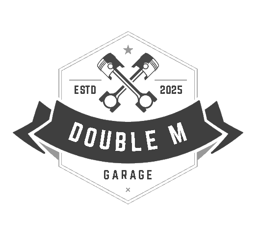
Maciuc Mihai
Martișcă Diana-Maria
În contextul creșterii mobilității urbane și a utilizării vehiculelor alternative precum trotinetele și bicicletele electrice, necesitatea unui service eficient, modern și bine organizat este din ce în ce mai mare. În același timp, clienții caută soluții digitale care să le permită programarea rapidă a intervențiilor și transparență în comunicarea cu prestatorii de servicii.
MaT DoubleM răspunde acestei nevoi printr-o soluție completă, orientată spre digitalizare și eficiență operațională. Scopul aplicației este de a reduce birocrația, de a elimina notițele scrise pe hârtie și de a înlocui comunicarea informală cu o platformă clară și bine structurată. Printr-o interfață intuitivă, utilizatorii pot transmite rapid cereri, iar personalul service-ului poate gestiona eficient atât comenzile, cât și stocurile de piese.
Aplicația este potrivită pentru ateliere mici și mijlocii care doresc să își digitalizeze activitatea fără a investi în soluții comerciale complexe și costisitoare. Cu un cost redus de mentenanță și o arhitectură ușor de extins, MaT DoubleM poate servi drept punct de plecare pentru dezvoltări ulterioare – precum integrarea unui sistem de plată online sau conectarea la furnizori externi.
MaT DoubleM este o aplicație web destinată digitalizării procesului de programare, intervenție și administrare stocuri pentru un service care deservește vehicule precum biciclete, trotinete și mașini. Aplicația oferă o interfață intuitivă pentru clienți, un panou administrativ pentru manageri și un spațiu dedicat pentru mecanici.
Implementarea proiectului MaT DoubleM a fost realizată gradual, respectând principiile separării responsabilităților și reutilizabilității codului. Arhitectura adoptată este una de tip MVC simplificat, cu separarea clară a logicii aplicației în views, controllere, modele și fișiere de configurare.
Frontend (HTML/CSS/JS):
Interfața utilizatorului a fost dezvoltată în HTML5, cu o structură modulară pentru fiecare pagină (view pentru client, mecanic, admin). CSS-ul este scris manual și organizat pe fișiere pentru o personalizare clară a fiecărui view. JavaScript este utilizat pentru validarea formularelor, manipularea DOM și integrarea cu API-urile backend (ex: fetch cu JWT pentru autorizare).
Backend (PHP):
Backend-ul este scris în PHP procedural, dar organizat pe directoare conforme unui model logic de tip MVC:
controllers/: conține clasele principale care tratează logica pentru cereri (RequestController.php), stocuri (StockController.php) și comenzi (OrderController.php). Fiecare controller primește datele din request, le validează și apelează metodele relevante din model.
models/: implementează interacțiunile directe cu baza de date folosind PDO. Modelele sunt centrate în jurul entităților-cheie: utilizatori, cereri, produse, comenzi.
helpers/: include funcții auxiliare, în special jwt_helper.php pentru validarea tokenurilor JWT și extragerea informațiilor despre utilizator.
securitate și rutare: rutarea este gestionată în fișierul router.php, care verifică existența unui token JWT în antetul cererilor și, dacă este valid, redirecționează logica către controllerul corespunzător. Dacă tokenul este invalid sau absent, se returnează un cod 401 Unauthorized.
Aceasta este pagina de start a aplicației, gândită ca un punct de intrare informativ și vizual pentru utilizatorii noi. Conține o prezentare generală a serviciilor oferite de atelier, imagini reprezentative și butoane de navigare către funcționalitățile principale, cum ar fi cererea de programare, contactul sau prețurile serviciilor. Designul este adaptat pentru afișare pe dispozitive variate și oferă o primă impresie profesională și clară asupra aplicației.
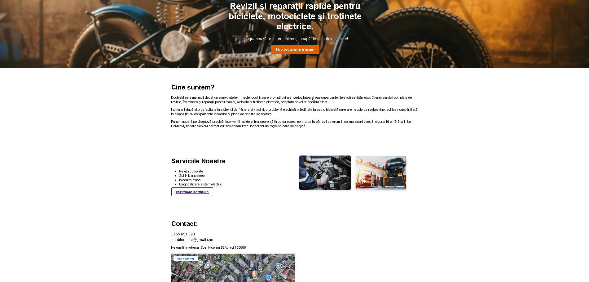
Această pagină oferă utilizatorului o interfață simplă și intuitivă pentru a trimite o cerere de programare. Formularul conține câmpuri pentru alegerea tipului de vehicul, descrierea problemei și selectarea unei date disponibile. Datele sunt validate în JavaScript, iar cererea este trimisă către backend. De asemenea, în această secțiune poate fi completat un formular de review și pot fi vizualizate review-urile clienților care în trecut au apelat la serviciile service-ului. Prin intermediul “Acces dashboard”, staff-ul service-ului poate accesa zona de administrator, respectiv manageriere task-uri a mecanicilor.
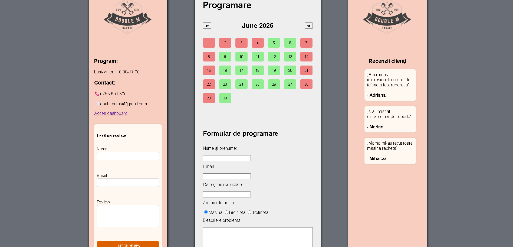
Printre elementele importante de cod ale acestei pagini se numără funcția de generare a calendarului: 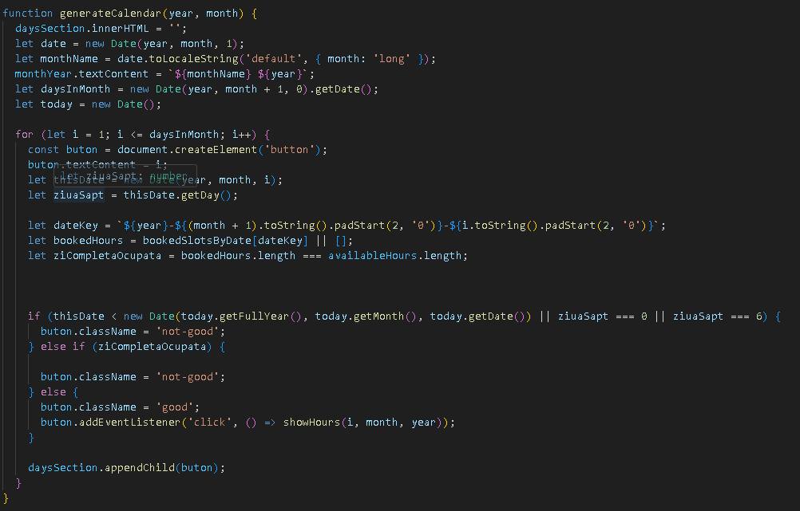
Dashboard-ul se împarte în 3 funcționalități: administrare cereri, administrare stocuri și trimitere cereri la furnizori.
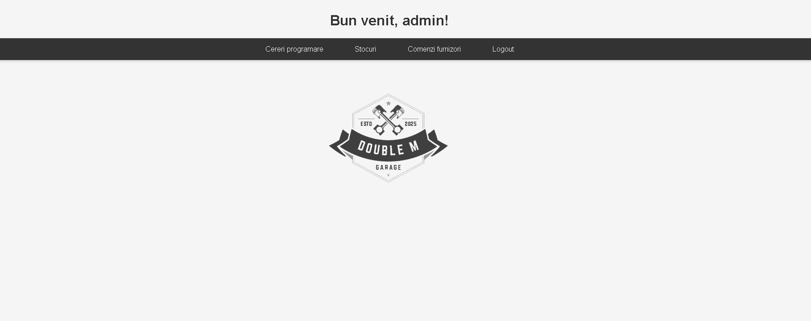
Prima interfață permite administratorului să vizualizeze toate cererile primite, să le aprobe sau să le respingă și să trimită un mesaj de răspuns. În momentul aprobării, se declanșează și trimiterea unui email către client folosind PHPMailer.
În a doua zonă putem vizualiza stocurile disponibile la momentul curent, stocuri care pot fi modificate dinamic atât de admin (în eventualitatea în care noi achiziții sunt aduse în magazin) cât și de mecanic (folosește anumite piese, așadar le scade de pe stoc).
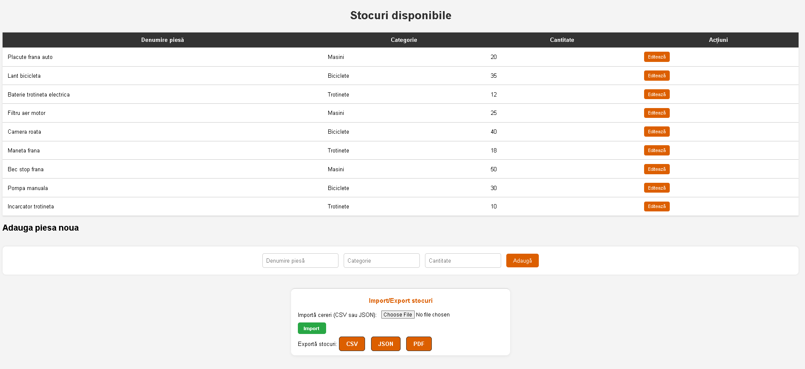
Ultima interfață este cea în care am înregistrat în baza de date cereri pe care trebuie sa le trimitem către furnizori. Această parte lasă loc de extindere, întrucât cererile nu sunt efectiv trimise, doar înregistrate.
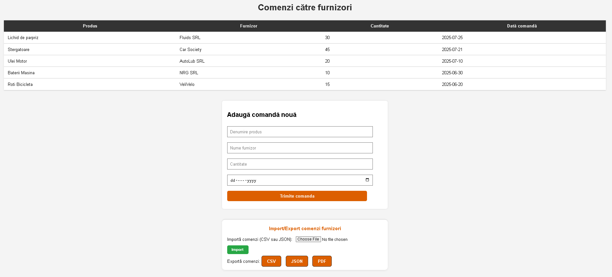
Dashboard-ul este similar cu cel al adminului, cu mici excepții. Mecanicul are acces doar la cererile aprobate. Acestea sunt afișate într-o listă cu detalii precum nume client, dată și descriere. Mecanicul poate marca o cerere ca „rezolvată”, acțiune care actualizează baza de date și elimină cererea din lista sa curentă. De asemenea, mecanicul nu poate înregistra cereri către furnizori, această parte fiind sub administrația managerului de service.
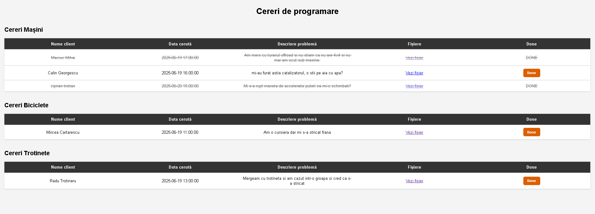
Aceasta este prima secțiune din dashboard-ul adminului. Printre funcționalitățile principale se numără aprobarea și respingerea cererilor, ștergerea lor sau editarea statusului unei cereri care a fost aprobată sau respinsă. Cererile sunt împărțite pe categoriile de mobil (mașină, bicicletă, trotinetă) urmând ca mai apoi cererile aprobate să fie trimise către mecanic. 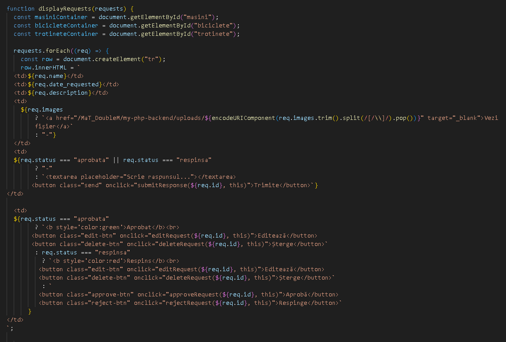
Pagina este accesibilă doar administratorului și afișează lista curentă de piese disponibile în stoc. Fiecare element poate fi editat (modificare cantitate sau preț) sau șters. De asemenea, există posibilitatea adăugării unui produs nou în stoc. Pe toate paginile de operare ale adminului sunt disponibile funcțiile de import/export date, cu cele 3 formate standard: CSV, JSON sau PDF.
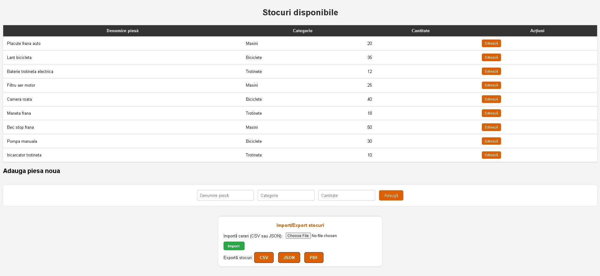
Fiecare membru din grupul administrativ al service-ului se va loga cu un username și o parolă. Acesta va avea un rol asignat care va determina accesul restricționat sau cu drepturi depline al fiecăruia. De exemplu, administratorul poate manageria tot, în vreme ce mecanicul doar va vedea cererile, fără să le poată manipula direct. Fiecare logare va porni o sesiune nouă.
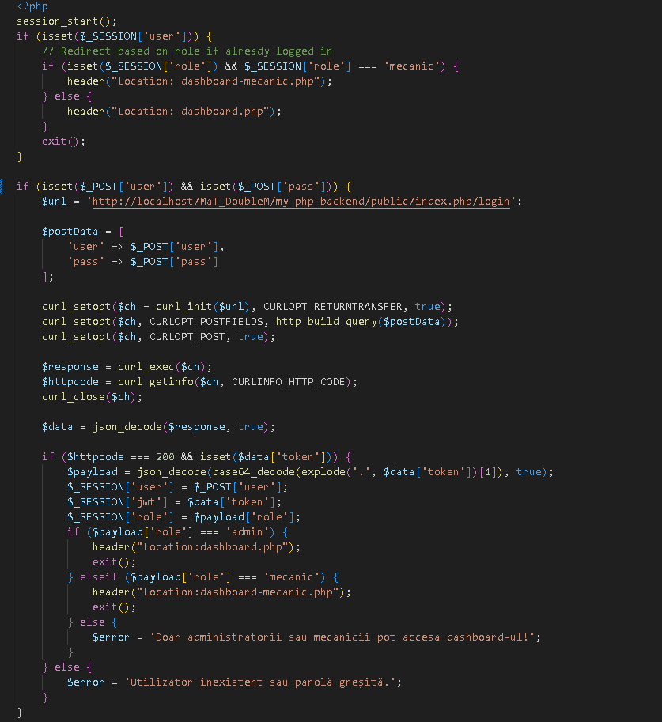
Nu putem vorbi despre backend fără să introducem ideea de router implementată în proiect. Fișierul router.php gestionează toate rutele aplicației din backend. Acesta verifică dacă există un token JWT valid în antetul cererilor HTTP. În funcție de URL-ul și metoda cererii (GET, POST, PUT), routerul trimite controlul către controllerul corespunzător. Dacă tokenul lipsește sau este invalid, se returnează eroare 401.
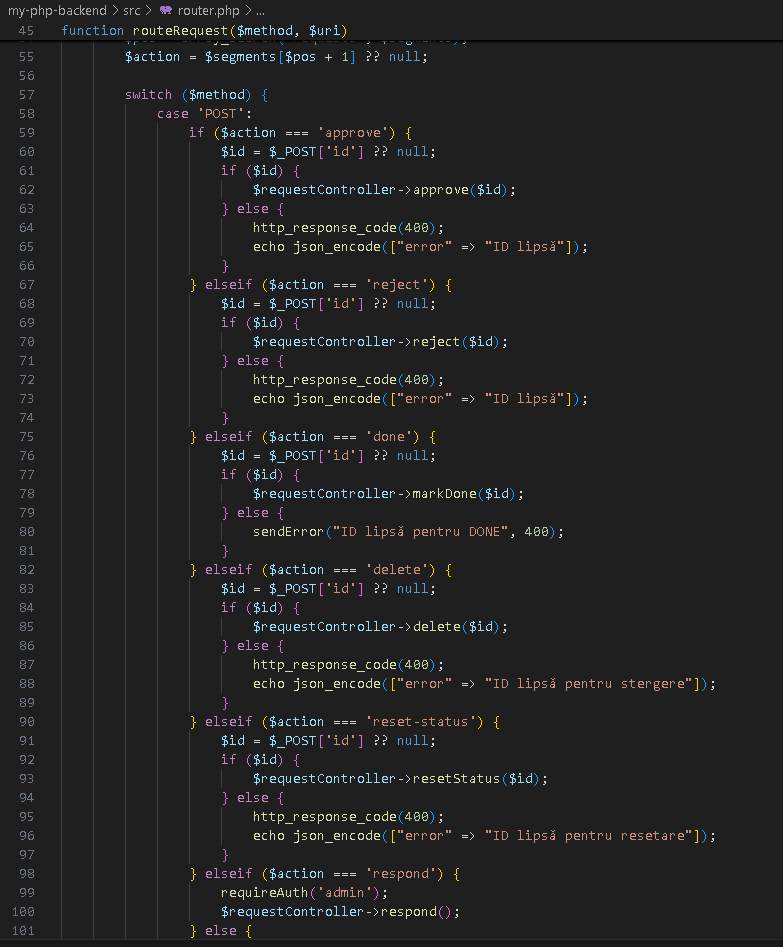
Aplicația este structurată după principiile arhitecturii MVC, iar controller-ele joacă un rol esențial în gestionarea cererilor venite din partea utilizatorilor, în prelucrarea acestora și în comunicarea cu modelele pentru manipularea datelor. În cadrul acestei aplicații, au fost implementate următoarele controllere:
RequestController
Acest controller gestionează cererile trimise de către utilizatori pentru diverse probleme tehnice (legate de mașini, biciclete sau trotinete). Principalele funcționalități includ: crearea unei cereri noi, afișarea tuturor cererilor, răspuns la cereri (inclusiv trimiterea unui email automat către utilizator prin PHPMailer), aprobarea sau respingerea cererilor, ștergerea unei cereri, resetarea statusului, marcarea unei cereri ca fiind finalizată.
RequestController lucrează în strânsă legătură cu modelul Request și oferă un set complet de acțiuni pentru gestionarea solicitărilor de service.
ReviewController
ReviewController este responsabil pentru gestionarea recenziilor lăsate de utilizatori în cadrul aplicației. Acest controller are două funcționalități principale.
Adăugarea unui review - Metoda add() primește datele trimise prin formular (nume, email și conținutul recenziei) și le inserează în baza de date, în tabelul reviews. Înainte de a salva informațiile, controllerul verifică dacă toate câmpurile sunt completate. Dacă datele sunt valide, recenzia este stocată, iar utilizatorul primește un mesaj de confirmare. În caz contrar, este generat un mesaj de eroare.
Afișarea tuturor recenziilor - Metoda getAll() extrage toate recenziile din baza de date, sortate descrescător după ID (cele mai recente primele). Sunt returnate doar câmpurile relevante (name și text), care pot fi afișate apoi într-o pagină publică sau într-un dashboard administrativ.
StockController
StockController gestionează operațiile legate de stocurile de piese din aplicație. Acesta interacționează cu modelul Stock și oferă funcționalități esențiale pentru vizualizarea, actualizarea și adăugarea pieselor în stoc. Funcționalitățile principale includ:
Vizualizarea tuturor pieselor - Metoda getAll() preia toate înregistrările din tabelul de stocuri (piese) și le returnează în format JSON. Această funcționalitate este utilă pentru afișarea pieselor disponibile într-un panou de administrare sau într-un magazin online.
Actualizarea stocului - Metoda update() primește un obiect JSON care trebuie să conțină id și cantitate. Aceasta actualizează cantitatea disponibilă pentru piesa specificată. Este utilă, de exemplu, după o vânzare sau primirea unui nou lot de produse.
Adăugarea unei piese noi - Metoda add() primește un obiect JSON ce conține denumire, categorie și cantitate. Aceste date sunt validate și, dacă sunt corecte, se inserează în baza de date. Astfel, aplicația permite adăugarea de produse noi în catalogul de stocuri.
OrderController
OrderController gestionează operațiile legate de comenzile către furnizori,
interacționând cu modelul Order. Acesta permite adăugarea de comenzi noi și afișarea comenzilor deja existente, contribuind la organizarea eficientă a aprovizionării cu piese.
Afișarea comenzilor existente - Metoda getOrders() extrage toate comenzile înregistrate în baza de date folosind metoda getAll() din modelul Order. Datele sunt returnate în format JSON, fiind utile pentru afișarea într-un panou de administrare sau într-o aplicație internă.
Adăugarea unei comenzi noi - Metoda addOrder() primește datele unei comenzi sub formă de JSON (produs, furnizor, cantitate, data_comanda). După validarea acestor date, acestea sunt inserate în tabelul comenzi_furnizori. Dacă inserarea reușește, se trimite un răspuns pozitiv; altfel, se returnează un mesaj de eroare și se înregistrează în loguri pentru depanare.
Aplicația web este structurată pe baza principiului separării responsabilităților, iar componentele de tip Model sunt responsabile de interacțiunea directă cu baza de date. Mai jos sunt prezentate cele patru modele principale: Request, Stock, Order și Review.
Request
Modelul Request gestionează cererile trimise de utilizatori către service-ul tehnic. Acesta oferă funcționalități pentru: crearea unei cereri noi, incluzând informații despre nume, email, tipul problemei, data, descrierea defecțiunii și imagini; listarea tuturor cererilor înregistrate; răspuns la o cerere, prin completarea câmpului response; aprobarea / respingerea cererii, modificând câmpul status; ștergerea unei cereri din baza de date; resetarea statusului în cazuri administrative; marcarea cererii ca finalizată, folosind câmpul done.
Acest model contribuie semnificativ la gestionarea eficientă a solicitărilor clienților și automatizarea fluxului de lucru din service.
Review
Modelul Review este responsabil pentru gestionarea recenziilor lăsate de utilizatori în urma interacțiunii cu serviciul oferit de aplicație. Prin acest model, se asigură o comunicare deschisă între utilizatori și echipa tehnică, oferind feedback valoros. Funcționalitățile principale sunt:
Adăugarea unei recenzi - utilizatorul poate trimite un comentariu care conține numele său, adresa de email și mesajul propriu-zis;
Afișarea tuturor recenziilor - sunt returnate toate recenziile din baza de date, în ordine descrescătoare după ID, pentru a afișa cele mai recente opinii primele.
Acest model contribuie la transparență și la îmbunătățirea constantă a calității serviciilor prin analiza experiențelor clienților.
Stock
Modelul Stock gestionează toate operațiunile legate de piesele din stocul atelierului. Acesta permite vizualizarea, adăugarea și actualizarea pieselor disponibile, contribuind astfel la menținerea unei evidențe clare a resurselor necesare reparațiilor. Funcționalități cheie:
Afișare stoc returnează toate piesele existente în baza de date, împreună cu detalii precum denumirea, categoria și cantitatea disponibilă;
Actualizare cantitate - permite modificarea rapidă a stocului pentru o piesă anume, în funcție de ID-ul acesteia;
Adăugare piesă nouă - facilitează extinderea stocului prin introducerea de componente noi, clasificate pe categorii (ex: Mașini, Biciclete, Trotinete).
Prin acest model, aplicația asigură o gestiune eficientă a stocurilor, evitând lipsurile sau suprasaturarea cu produse inutile.
Order
Modelul Order gestionează comenzile către furnizori. Acesta centralizează informațiile despre piesele necesare, furnizorii de la care se comandă și datele esențiale ale comenzii, contribuind la fluidizarea procesului de aprovizionare. Funcționalități principale:
Afișare comenzi - returnează toate comenzile plasate, ordonate descrescător după data comenzii, oferind o vedere cronologică asupra aprovizionărilor;
Inserare comandă nouă - permite înregistrarea unei comenzi noi, incluzând informații precum produsul comandat, furnizorul, cantitatea și data efectuării comenzii. În caz de eroare, aceasta este logată pentru depanare.
Acest model sprijină transparența și controlul asupra relației cu furnizorii, asigurând că piesele lipsă sunt identificate și comandate eficient.
Baza de date utilizată în cadrul acestei aplicații a fost creată în phpMyAdmin, folosind MySQL ca sistem de gestionare a bazelor de date relaționale. Crearea structurii bazei de date s-a realizat prin importarea fișierului issuesdb.sql, care conține toate comenzile necesare pentru definirea tabelelor, precum și pentru popularea acestora cu date inițiale relevante pentru funcționarea aplicației.
Fișierul SQL importat a generat următoarele tabele:
users – conține informații despre utilizatorii aplicației, cum ar fi numele complet, numele de utilizator, adresa de email, parola și rolul (ex. client, mecanic, administrator).
requests – stochează cererile de reparații primite de la utilizatori, incluzând detalii precum tipul problemei (Mașină, Bicicletă, Trotinetă), data programării, descrierea problemei, imagini atașate, răspunsul oferit de echipă și statusul cererii.
reviews – permite colectarea de recenzii din partea utilizatorilor privind experiența avută cu serviciile oferite.
comenzi_furnizori – păstrează înregistrări ale comenzilor de piese către furnizori, cu detalii precum produsul comandat, furnizorul, cantitatea și data comenzii.
piese – gestionează inventarul de piese disponibile, organizate pe categorii precum Mașini, Biciclete și Trotinete.
După crearea acestor tabele, fișierul SQL include și un set de inserții de date (INSERT INTO) pentru popularea acestora cu informații de test sau inițiale. Astfel: tabelul users a fost populat cu 3 utilizatori: un client, un administrator și un mecanic, tabelul piese include 10 înregistrări reprezentând diverse componente auto, tabelul comenzi_furnizori cuprinde 5 comenzi de produse adresate unor furnizori fictivi, în reviews se regăsesc 3 recenzii oferite de utilizatori mulțumiți, iar în requests sunt înregistrate 6 cereri de reparații, cu date detaliate despre problemele semnalate.
Prin această structură, aplicația este capabilă să gestioneze eficient utilizatorii, cererile de intervenție, piesele din stoc, comenzile către furnizori și feedback-ul clienților.
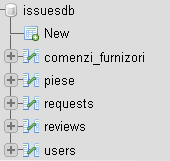
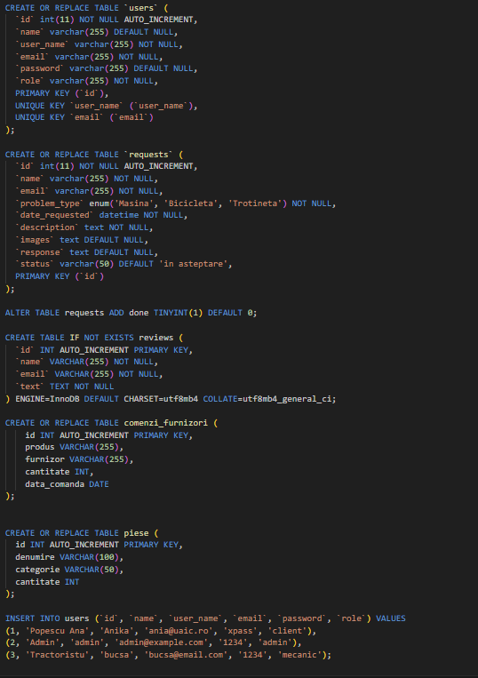
Autentificarea este gestionată de login.php, care validează credențialele în baza de date. Dacă sunt corecte, se generează un JWT care conține informații despre utilizator și rol. Acest token este trimis clientului și salvat local. La fiecare cerere ulterioară către backend, tokenul este trimis în antet pentru validare. jwt_helper.php se ocupă de generarea și decodarea tokenului.
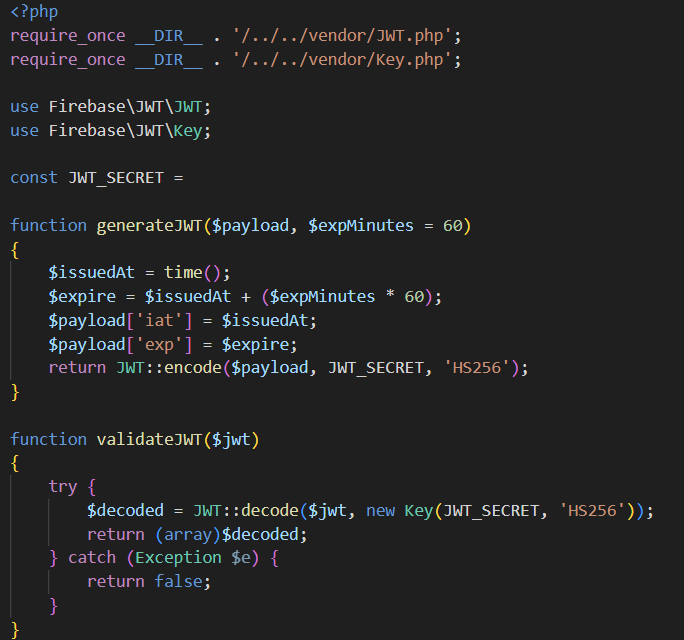
Pentru a preveni atacurile de tip SQL Injection, toate interacțiunile aplicației cu baza de date sunt realizate utilizând prepared statements prin intermediul extensiei PDO în PHP. Acest mecanism elimină posibilitatea ca un utilizator rău intenționat să insereze cod SQL malițios în câmpurile formularelor, deoarece valorile sunt transmise separat față de instrucțiunea SQL propriu-zisă. Astfel, comanda SQL este compilată o singură dată, iar datele utilizatorului sunt interpretate strict ca parametri.
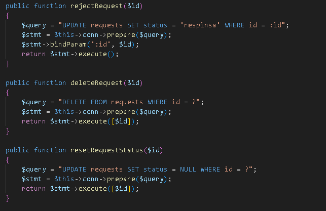
În ceea ce privește atacurile de tip Cross-Site Scripting (XSS), aplicația utilizează tokenuri JWT pentru autentificare și autorizare. Accesul la datele sensibile din backend este permis doar dacă cererea conține un token valid. De asemenea, datele introduse de utilizator nu sunt reafișate în pagină fără a fi validate și filtrate, ceea ce reduce riscul executării codului malițios injectat în browser.
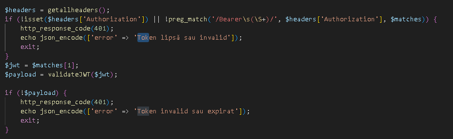
MaT DoubleM este o aplicație complet funcțională ce poate fi adaptată pentru diverse centre de reparații. Cu o arhitectură clară, roluri bine definite și funcționalități utile, proiectul este o bază solidă pentru dezvoltări viitoare. Printre posibilele implementări viitoare se numără un sistem de notificări live sau integrare cu Google Calendar.